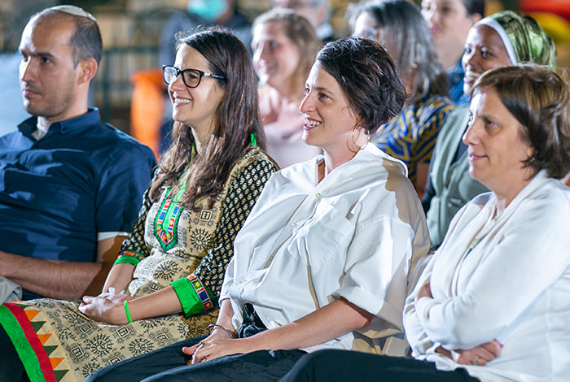
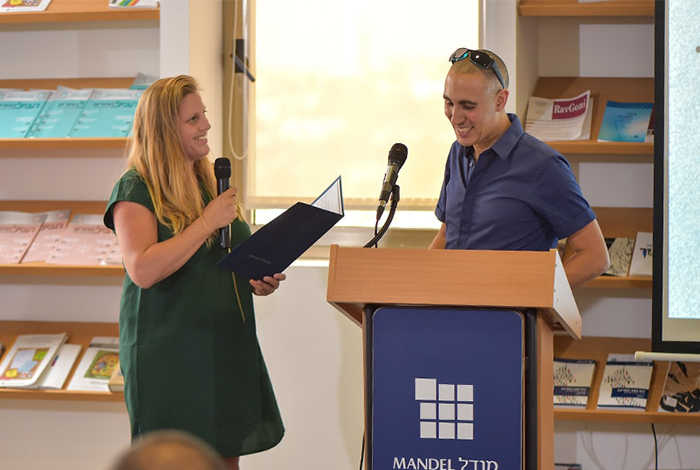
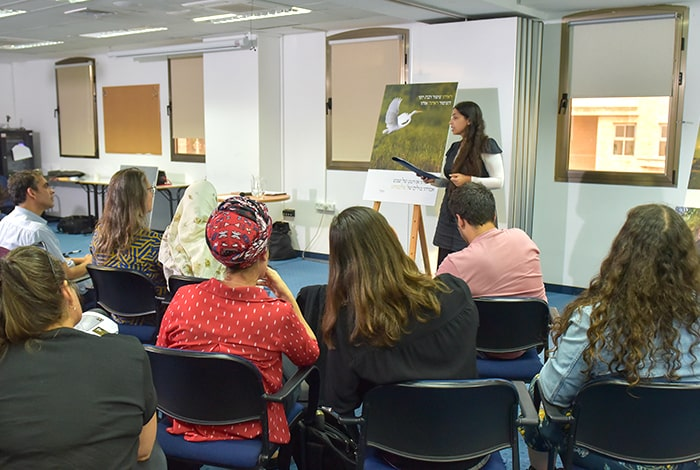
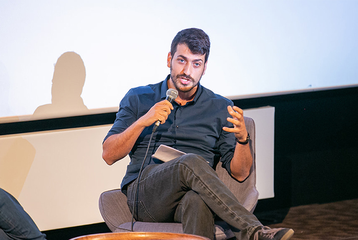
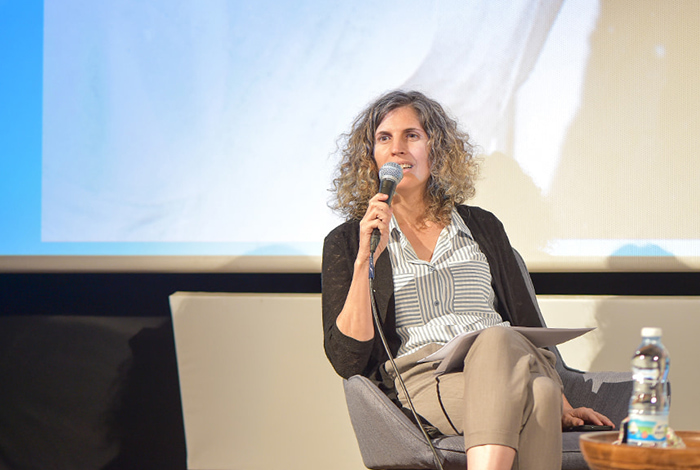

בית ספר מנדל למנהיגות חינוכית היא תוכנית הנמשכת שנתיים, ובמהלכה מפתחם העמיתים את יכולות המנהיגות שלהם. רבים מבוגרי התוכנית משתלבים בתפקידי מפתח במערכת החינוך, במשרד החינוך, בשלטון המקומי ובארגונים שונים. הכירו את בית ספר מנדל למנהיגות חינוכית.

כמעט חמש מאות עמיתים סיימו עד כה 27 מחזורים של התוכנית הייחודית של בית ספר מנדל למנהיגות חינוכית. בכל שנה פונים מאות מועמדים, ומהם תקבלים לתוכנית, לאחר תהליך מיון קפדני, רק כעשרים עמיתים בעלי יכולת ניהול, כישורים אינטלקטואליים גבוהים ומחויבות להוביל שינוי למען שיפור החינוך בישראל. העמיתים בתוכנית זוכים למלגת קיום.
לימודים בתוכנית אישית
כל אחד מהעמיתים זוכה להעמיק את עולם הידע המקצועי שלו, לגבש חזון המבוסס על השקפת עולמו ועל עמדותיו הערכיות ולתרגמו לתוכנית פעולה בעולם המעשה. סגל בית הספר, המגיע מתחומים מגוונים, עומד לרשות העמיתים לכל אורך התוכנית, ונוסף על כך יש להם האפשרות להתייעץ עם מומחים מקצועיים (משדה המחקר או העשייה) בארץ, ובמידת הצורך גם במסגרת נסיעה לחו"ל. תוכנית לימודים אישית נבנית עבור כל אחד מהעמיתים, והיא כוללת גם הנחיה אישית ממומחים שביכולתם לקדם כל אחד מהעמיתים בתחום העניין שלו.

תקופת התמחות (סטאז')
התוכנית כוללת פרק זמן משמעותי המוקדש ללימוד המתרחש בשדה העשייה. כל אחד מהעמיתים מצטרף בתקופת ההתמחות לארגון או לבעל תפקיד בתחום העניין שלו. במקביל מוצעת לעמיתים סדנה לליווי הסטאז', בקבוצות קטנות, המאפשרת עיבוד, ניתוח, שיתוף והמשגה.

הבוגרים משתלבים בתפקידי הובלה וניהול מגוונים ברחבי הארץ
בסיום התוכנית שבים העמיתים לשדה העשייה, ומרביתם משתלבים בעמדות מפתח בשדה החינוך: במשרד החינוך ובמחלקות חינוך בשלטון המקומי, בבתי ספר ובארגונים חינוכיים וחברתיים שונים. בתהליך ההשמה של העמיתים בית הספר מסייע בבחינת כיווני פעולה שיאפשרו תרומה מרבית של כל עמית ועמיתה לחברה בישראל.
בין שאר העמיתים תמצאו במחזור זה את
נטע אורן, משפטנית מן המגזר הציבורי שלפני תחילת לימודיה בבית הספר שימשה כממונה על ענייני בג"צים בפרקליטות המדינה והייתה שותפה לגיבוש מדיניות רשויות המדינה בסוגיות שונות הנידונות בבג"צ בתחומי החינוך, ההשכלה הגבוהה ועוד. נטע מתעניינת בקידום שינוי חברתי ובצמצום פערים בחינוך, ובפרט בקידום זכויות של ילדים עם צרכים מיוחדים ושילובם במערכת החינוך, בין היתר באמצעות כלים מעולם המשפט.
עמיתה נוספת בתוכנית היא
בלה אלכסנדרוב. לפני הצטרפותה לתוכנית כיהנה כמנכ"לית עמותת ארץ־עיר, הפועלת לקידום איכות החיים בפריפריות באמצעות קידום קהילות, יזמות חברתית ותעסוקה מגוונת והוגנת. כמו כן, בלה נבחרה לתוכנית המנהיגות העולמית של קרן ברק אובמה, מבין 5000 מנהיגים חברתיים בכל רחבי העולם, והיא הישראלית היחידה בתוכנית.

איתי בנוביץ' ניהל את התיכון הישראלי למדעים ולאמנויות (יאס"א) והיה מנכ"ל המרכז הישראלי למצוינות בחינוך. לאיתי תארים במדעי החיים ובמדעי הטבע, והוא מתעניין בהוראת מחוננים ומצטיינים.
מוחמד קונדס הוא איש חינוך ואמנות, שחקן ומוזיקאי. מוחמד ניהל תוכניות ומוסדות העוסקים בחינוך דרך מוזיקה ואמנות, ובתפקידו האחרון ניהל את מרכז מנאר לקידום נוער בסיכון ביפו.
אלה רק חלק קטן מעמיתי המחזורים הנוכחיים של התוכנית. את שאר העמיתים אפשר להכיר פה. אם גם אתם מעוניינים לפעול למען שינוי בתחום החינוך בישראל, ליזום ולקדם מיזמים ולתרום לשיפור החברה בישראל, הדלת למחזור הבא של בית ספר מנדל למנהיגות חינוכית נפתחת לפניכם.
מהם תנאי הקבלה לתוכנית?
כל אדם הרואה עצמו מתאים לתוכנית ויש בו הרצון לפעול למען החינוך והחברה בישראל, מוזמן להגיש את מועמדותו. תנאי הסף הם יכולת ניהולית מוכחת ותואר שני ממוסד להשכלה המוכר על-ידי המל"ג. כמו כן, נדרשות תכונות אישיות כגון פתיחות אינטלקטואלית, חשיבה ביקורתית, ראייה מערכתית ומחויבות אישית לפעולה בשדה החינוך.

מרגישים שאתם יכולים לחולל שינוי מהותי בעולם החינוך בישראל, ליזום פרויקטים שישפיעו לדורות ולנהל מיזמים משמעותיים? אתם בעלי יכולות ניהוליות מתאימות וחזון? הגישו את מועמדותכם למחזור ל' של בית ספר מנדל למנהיגות חינוכית, בקישור הזה>>
{kind=link}
{kind=link}
{kind=link}
{kind=link}
{kind=link}